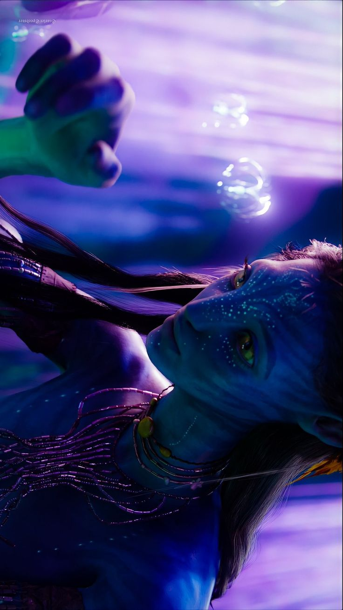

“Eu vejo você” — onde tudo é conectado por Eywa

Se eu tivesse que transformar você em um lugar, seria Pandora.
Não aquela força de nunca cair, mas a de continuar sendo você mesmo depois de tudo.
Igual a Neytiri correndo na floresta. Sem coleira, sem roteiro. Só sendo.
Tudo em você parecia ter intensidade demais para ser simplesmente esquecido.
Daquilo que talvez você achasse comum, mas que, para mim, fazia você ser você. E isso era o que mais me prendia.